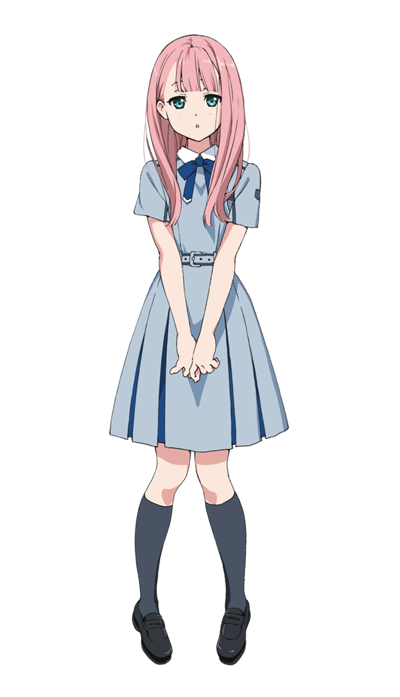
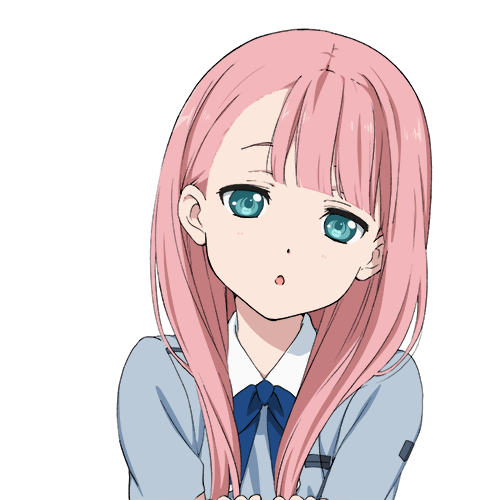
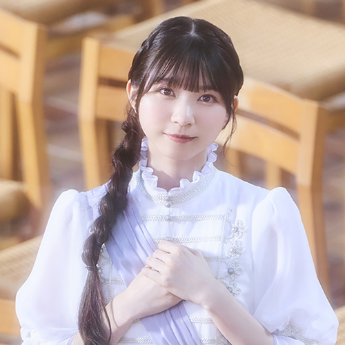

神木みかみ
KAMIKI MIKAMI
PROFILE
- 誕生日
- 10月2日
- 身長
- 161cm
- 出身地
- 京都府
- 年齢
- 16歳
- 血液型
- O型
- ペンライト
- ライトピンク
- 座右の銘
- 鳥の上にも三年
- 特技
- 鳥に詳しい／ハトやエミューの鳴き声のものまね
- 将来の夢
- 幸せな家族を築くこと
- 好きな食べ物
- 和菓子
- 苦手なもの
- 鳥のピンチ／鳥が居ないこと
- 趣味
- ふわふわグッズ、鳥グッズを集めること

マイペースなはんなり娘。おっとりして抜けているようにも見えるが、日本舞踊家元の長女として厳しく育てられたため礼儀作法はしっかりしている。京都出身で鳥が大好き。
PROFILE
- 誕生日
- 10月2日
- 身長
- 161cm
- 出身地
- 京都府
- 年齢
- 16歳
- 血液型
- O型
- ペンライト
- ライトピンク
- 座右の銘
- 鳥の上にも三年
- 特技
- 鳥に詳しい／ハトやエミューの鳴き声のものまね
- 将来の夢
- 幸せな家族を築くこと
- 好きな食べ物
- 和菓子
- 苦手なもの
- 鳥のピンチ／鳥が居ないこと
- 趣味
- ふわふわグッズ、鳥グッズを集めること
CHARACTER DESIGN
黒星紅白
「キノの旅」シリーズ、「ソードアート・オンライン オルタナティブ ガンゲイル・オンライン」
VOICE ACTOR
